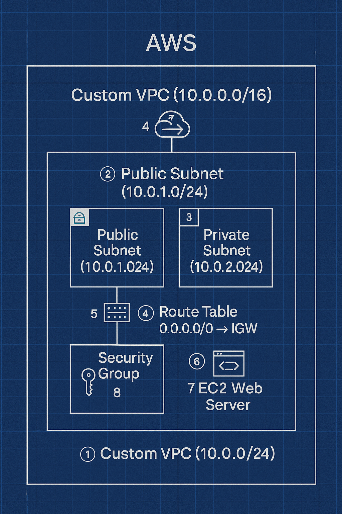

Project Overview
This project demonstrates how to build a secure and scalable AWS environment using:
- Custom VPC with public & private subnets
- Route tables & Internet Gateway
- Security Groups for HTTP & SSH
- EC2 Web Server (Amazon Linux 2023)
- Nginx configured as a web server
Architecture Diagram

Useful Links